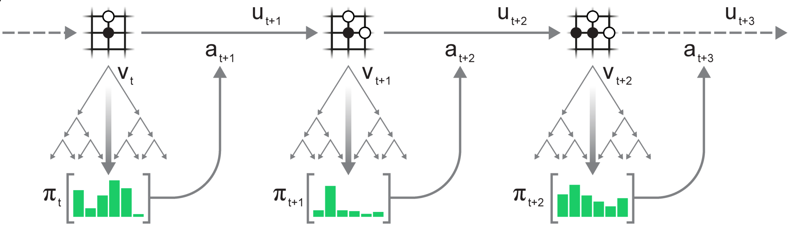
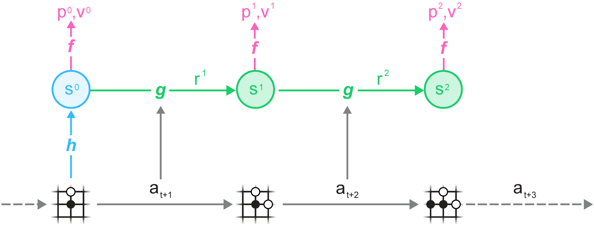

The next state sk and reward rk are looked up in the state transition and reward table of state sk−1 when k<l
Expansion
At the final time-step l of the simulaion, the state and reward are computed through learned dynamics model
sl,rl=gθ(sl−1,al)
The state transition and reward table of state sl−1 is updated as S(sl−1,al)=sl and R(sl−1,al)=rl. State sl is added to search tree with policy table initialized by policy of prediction model P(sl,a)=pl
Backup
For k=l,l−1,⋯,0, the mean value and visit count of (sk−1,ak) on the simulated trajectory is updated as
Where Gk is made up of (l−k)-step estimated cumulative discounted reward and value of prediction model
Gk=τ=0∑l−k−1γτR(sk+τ,ak+τ+1)+γl−kvl

After a certain number of simulation, MCTS outputs an estimated value νt and a recommended policy πt(⋅) based on the visit count of root node
πt(a)=∑bN(s0,b)1/TN(s0,a)1/T
where temperature parameter T is used for training of model and decayes from 1 w.r.t. training steps. This ensures that the action selection becomes greedier as training progresses
Training
The model of MuZero μθ consists of a representation model, a dynamics model and a prediction model
SubPart
Type
Description
Definition
representation
world model
encodes the past observations
s0=hθ(o1,o2,⋯,ot)
dynamics
world model
dynamics and reward on internal state
sk,rk=gθ(sk−1,ak)
prediction
policy
policy and value on internal state
pk,vk=fθ(sk)

A trajectory is sampled from replay buffer for training and the model is unrolled recurrently for K steps